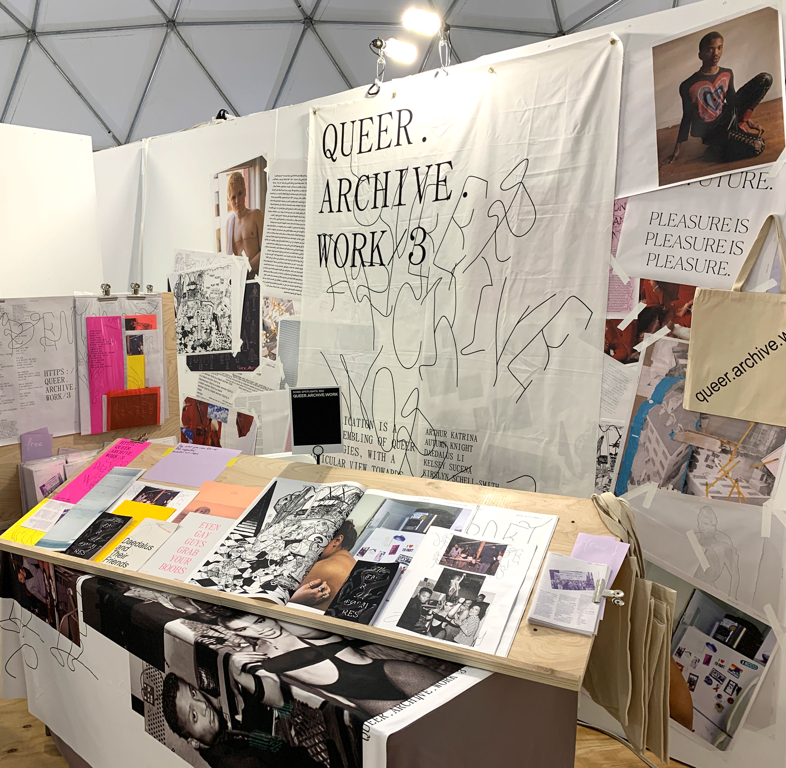
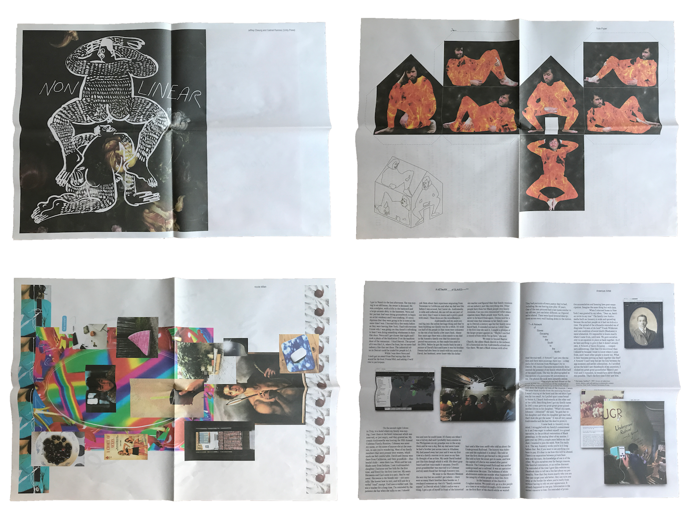

Queer.Archive.Work (2018–ongoing)

QUEER.ARCHIVE.WORK #3 installation at the NYABF, MoMA PS1 (2019)
Queer.Archive.Work is a platform that supports independent artists and writers through queer publishing. It began as a collaborative, serial publication in 2018. In 2020, the project was registered as a 501(c)(3) in Rhode Island, and is now a non-profit, anti-racist publishing studio, reading room, and community space. Its mission aims to prioritize urgent, radical, messy, and future-looking methodologies (urgentcraft), away from legacy institutions and art world conventions. QAW is a signal sent out into muddy waters; it’s a speculative approach emerging from (and moving towards) an undercommons—a collective place for subversive artists and writers who reject normative narratives. The publications, the space, the library, and the artists’ residency program are loose assemblings of queer practice, with a particular view towards the wayward (after Saidiya Hartman), wildness and failure (after Jack Halberstam), and refusal. QAW is an experiment in materiality (without losing sight of the network), porous space, shared practice (after Fred Moten), and communal care. QAW is publishing as practice as resistance.


